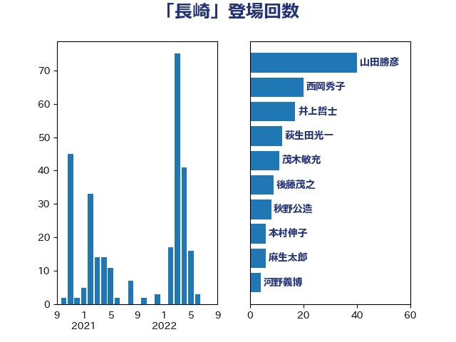

単語「長崎」

| 山田勝彦 | 立憲民主党 | 40 回 |
| 西岡秀子 | 国民民主党 | 20 回 |
| 井上哲士 | 日本共産党 | 17 回 |
| 萩生田光一 | 自由民主党 | 12 回 |
| 茂木敏充 | 自由民主党 | 11 回 |
| 後藤茂之 | 自由民主党 | 9 回 |
| 秋野公造 | 公明党 | 8 回 |
| 本村伸子 | 日本共産党 | 6 回 |
| 麻生太郎 | 自由民主党 | 6 回 |
| 河野義博 | 公明党 | 4 回 |
| 畦元将吾 | 自由民主党 | 4 回 |
| 伊波洋一 | 無所属 | 3 回 |
| 加藤竜祥 | 自由民主党 | 3 回 |
| 坂本哲志 | 自由民主党 | 3 回 |
| 大串博志 | 立憲民主党 | 3 回 |
| 山口那津男 | 公明党 | 3 回 |
| 岸田文雄 | 自由民主党 | 3 回 |
| 斉藤鉄夫 | 公明党 | 3 回 |
| 末次精一 | 立憲民主党 | 3 回 |
| 福山哲郎 | 立憲民主党 | 3 回 |
| 穀田恵二 | 日本共産党 | 3 回 |
| 菅義偉 | 自由民主党 | 3 回 |
| 高良鉄美 | 無所属 | 3 回 |
| 川田龍平 | 立憲民主党 | 2 回 |
| 本田顕子 | 自由民主党 | 2 回 |
| 梶山弘志 | 自由民主党 | 2 回 |
| 池畑浩太朗 | 日本維新の会 | 2 回 |
| 西田昌司 | 自由民主党 | 2 回 |
| 谷合正明 | 公明党 | 2 回 |
| 辻清人 | 自由民主党 | 2 回 |
| 野上浩太郎 | 自由民主党 | 2 回 |
| 野間健 | 立憲民主党 | 2 回 |
| 鈴木宗男 | 日本維新の会 | 2 回 |
| 鎌田さゆり | 立憲民主党 | 2 回 |
| 三浦信祐 | 公明党 | 1 回 |
| 上田清司 | 国民民主党 | 1 回 |
| 中西祐介 | 自由民主党 | 1 回 |
| 仁木博文 | 無所属 | 1 回 |
| 今井絵理子 | 自由民主党 | 1 回 |
| 伊藤岳 | 日本共産党 | 1 回 |
| 佐々木紀 | 自由民主党 | 1 回 |
| 加藤勝信 | 自由民主党 | 1 回 |
| 古賀之士 | 立憲民主党 | 1 回 |
| 吉田統彦 | 立憲民主党 | 1 回 |
| 吉田豊史 | 日本維新の会 | 1 回 |
| 国光あやの | 自由民主党 | 1 回 |
| 城井崇 | 立憲民主党 | 1 回 |
| 大西健介 | 立憲民主党 | 1 回 |
| 宮本岳志 | 日本共産党 | 1 回 |
| 小野寺五典 | 自由民主党 | 1 回 |
| 山口壯 | 自由民主党 | 1 回 |
| 山岸一生 | 立憲民主党 | 1 回 |
| 山谷えり子 | 自由民主党 | 1 回 |
| 平木大作 | 公明党 | 1 回 |
| 志位和夫 | 日本共産党 | 1 回 |
| 末松義規 | 立憲民主党 | 1 回 |
| 杉尾秀哉 | 立憲民主党 | 1 回 |
| 杉田水脈 | 自由民主党 | 1 回 |
| 林芳正 | 自由民主党 | 1 回 |
| 枝野幸男 | 立憲民主党 | 1 回 |
| 森屋隆 | 立憲民主党 | 1 回 |
| 泉健太 | 立憲民主党 | 1 回 |
| 片山さつき | 自由民主党 | 1 回 |
| 田村憲久 | 自由民主党 | 1 回 |
| 笠井亮 | 日本共産党 | 1 回 |
| 笹川博義 | 自由民主党 | 1 回 |
| 篠原豪 | 立憲民主党 | 1 回 |
| 西村康稔 | 自由民主党 | 1 回 |
| 西野太亮 | 自由民主党 | 1 回 |
| 西銘恒三郎 | 自由民主党 | 1 回 |
| 赤羽一嘉 | 公明党 | 1 回 |
| 金子恭之 | 自由民主党 | 1 回 |
| 長浜博行 | 無所属 | 1 回 |
| 阿部弘樹 | 日本維新の会 | 1 回 |
| 青山繁晴 | 自由民主党 | 1 回 |
| 青木愛 | 立憲民主党 | 1 回 |